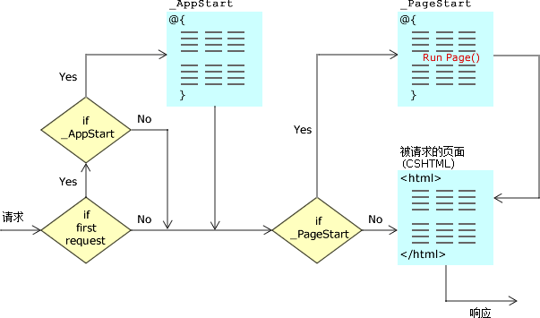

ASP.NET Web Pages - 全局页面
本章为您讲解全局页面 AppStart 和 PageStart。
Web 启动之前：_AppStart
大多数服务器端代码都是在独立的网页中编写的。例如，假如网页包含输入表单，那么该网页通常包含用于读取数据的服务器代码。
不过，通过在站点根目录中创建名为 _AppStart 的页面，您能够在站点启动前就已执行启动代码（startup code）。假如该页面存在，ASP.NET 会在站点内的任何页面被请求之前首先运行这个页面。
通常 _AppStart 用于启动代码和全局值的初始化，比如计数器和全局名称。
注释 1：_AppStart 的文件扩展名应与网页相同，比如 _AppStart.cshtml。
注释 2：_AppStart 有下划线前缀。正因如此，用户才无法直接查看该文件。
每张页面之前：_PageStart
就像在站点启动前运行 _AppStart 那样，您能够在每个文件夹中的任意页面之前运行代码。
对于 web 中的每个文件夹，您能够添加名为 _PageStart 的文件。
通常 _PageStart 用于设置文件夹中所有页面的布局文件，或者在运行页面之前检查用户登录。
如何工作？
下面的示意图展示了其工作原理：
当请求到来时，ASP.NET 检查 _AppStart 是否存在。如果存在，并且这是对站点的第一次请求，则运行 _AppStart。
然后 ASP.NET 检查 _PageStart 是否存在。如果存在，则运行 _PageStart，在被请求的页面之前。
如果您在 _PageStart 内部引用了对 RunPage() 的调用，那么您可以规定在何处运行被请求的页面。否则，_PageStart 在被请求页面之前运行。